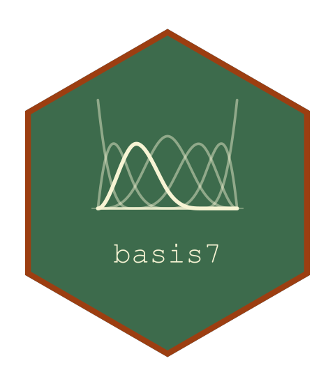

Package index
Bases
The families the package ships. Each is complete: all its functions are kept, so restricting one is a separate, deliberate step.
-
bspline_basis() - Construct a B-Spline Basis
-
fourier_basis() - Construct a Fourier Basis
The interface
What every basis answers. A subclass must implement only the first; the rest have numerical methods on the base class.
-
basis_eval() - Evaluate a Basis
-
basis_deriv() - Differentiate a Basis
-
basis_int() - Integrate a Basis
-
basis_gram() - Gram Matrix of a Basis
-
basis_colnames() - Column Names of a Basis Matrix
-
basis() - Basis Expansion
-
BsplineBasis() - B-Spline Basis
-
FourierBasis() - Fourier Basis
-
check_basis() - Validate a Basis
-
basis_is_numerical() - Which of a Basis's Methods Are Numerical
Internals
Exported for anyone writing a basis of their own: the numerical machinery the fallbacks are built from, documented rather than hidden.
-
print.basis - Print a Basis
-
plot.basis - Plot a Basis
-
fd_weights() - Finite-Difference Weights for an Arbitrary Stencil
-
fd_offsets() - Stencil Offsets for a Derivative Order
-
numerical_deriv_matrix() - Numerically Differentiate a Matrix-Valued Function
-
numerical_gram() - Gram Matrix by Composite Quadrature
-
gauss_legendre() - Gauss-Legendre Nodes and Weights
-
quad_rule() - Map a Quadrature Rule onto Intervals
-
bspline_design() - Call splines2 for a B-Spline Design Matrix
-
fourier_trig() - The Trigonometric Columns of a Fourier Basis
-
check_basis_args() - Validate the Arguments Every Basis Constructor Takes
-
check_eval_points() - Validate Evaluation Points Against a Basis
-
check_order() - Validate a Derivative Order
-
name_columns() - Name the Columns of a Basis Matrix
-
basis_partitions_unity() - Does This Basis Sum to One?
-
rel_close() - Compare Two Matrices Relative to Their Own Magnitude
-
print_basis_checks() - Print the Outcome of check_basis
-
is_base_basis_class() - Is This the Package's Own Base Class?
-
basis7basis7-package - basis7: An S7 Framework for Basis Expansions